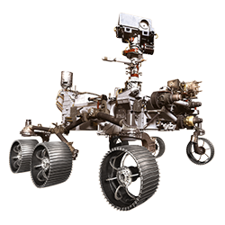
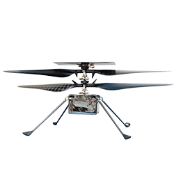

The Mars Rovers
Mars Rover
A Mars rover is a motor vehicle designed to travel on the surface of Mars. Rovers have several advantages over stationary landers: they examine more territory, they can be directed to interesting features, they can place themselves in sunny positions to weather winter months, and they can advance the knowledge of how to perform very remote robotic vehicle control.
Science
The big science question for the Mars Exploration Rovers is how past water activity on Mars has influenced the red planet's environment over time. While there is no liquid water on the surface of Mars today, the record of past water activity on Mars can be found in the rocks, minerals, and geologic landforms, particularly in those that can only form in the presence of water. That's why the rovers are specially equipped with tools to study a diverse collection of rocks and soils that may hold clues to past water activity on Mars.
The Robots

